Concepts. Every mockup edits a texture-free render of the real game at the game's own camera, so roads, coast and hills sit where the game puts them; the ground look is the only change. Zoomed-in views were painted from their default-zoom master. Map imagery © Mapbox © OpenStreetMap.
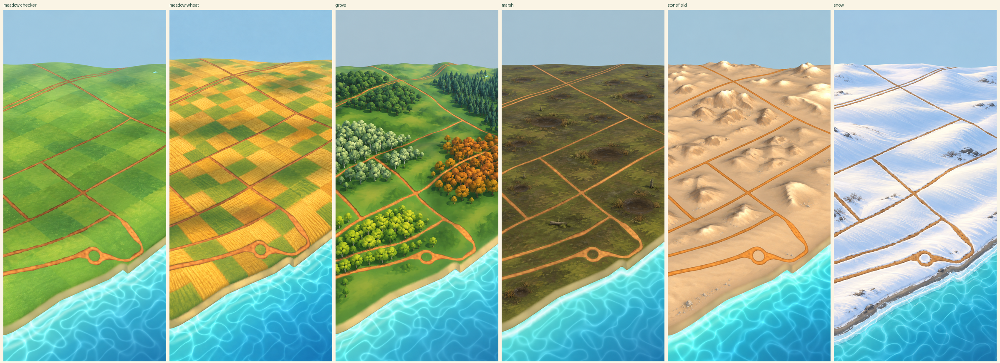
The same six at 96, 64 and 32 pixels wide. Can each biome be named from the smallest?
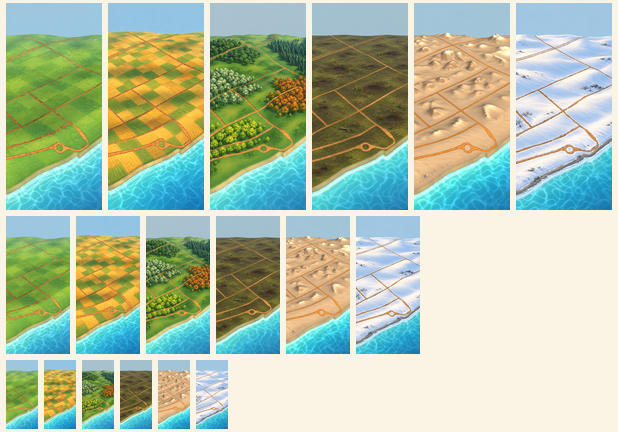
| pair | distance |
|---|---|
| meadow checker vs meadow wheat | 29.9 |
| meadow checker vs grove | 14.0 |
| meadow checker vs marsh | 42.2 |
| meadow checker vs stonefield | 40.6 |
| meadow checker vs snow | 62.0 |
| meadow wheat vs grove | 29.2 |
| meadow wheat vs marsh | 41.0 |
| meadow wheat vs stonefield | 29.6 |
| meadow wheat vs snow | 58.5 |
| grove vs marsh | 28.5 |
| grove vs stonefield | 35.4 |
| grove vs snow | 58.4 |
| marsh vs stonefield | 34.8 |
| marsh vs snow | 55.7 |
| stonefield vs snow | 30.1 |
| pair | distance |
|---|---|
| meadow vs grove | 7.0 |
| meadow vs marsh | 17.3 |
| meadow vs stonefield | 47.5 |
| meadow vs snow | 67.0 |
| grove vs marsh | 19.3 |
| grove vs stonefield | 48.3 |
| grove vs snow | 66.6 |
| marsh vs stonefield | 35.2 |
| marsh vs snow | 60.9 |
| stonefield vs snow | 31.8 |
Mean ground colour underrates pattern: the Grove's groves and the wheat's gold blocks separate far better than their means suggest, which is why the thumbnails are the test and the numbers are the check.
Farmland field blocks in random shades of meadow green, the original ground idea.
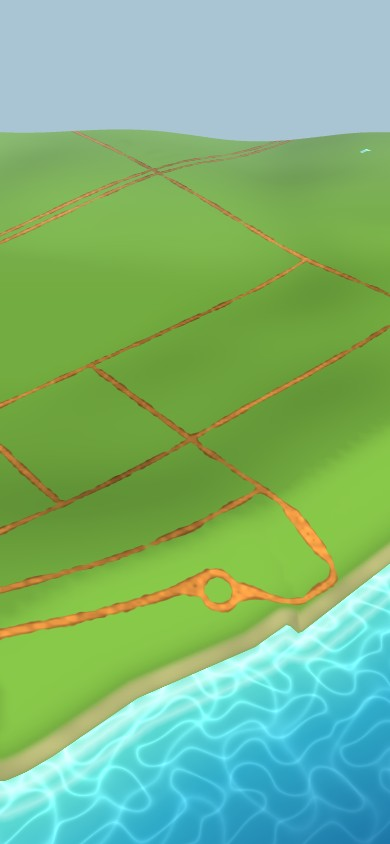
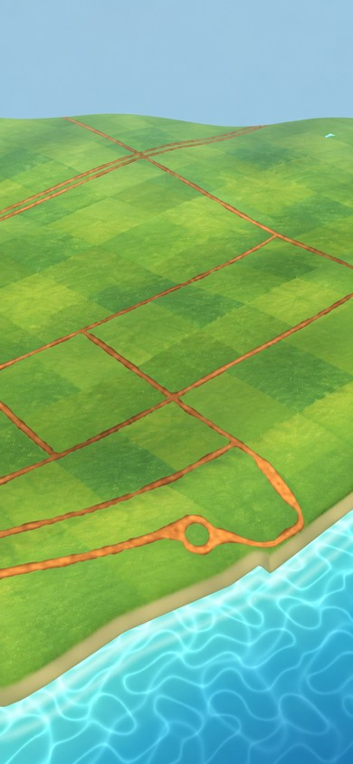
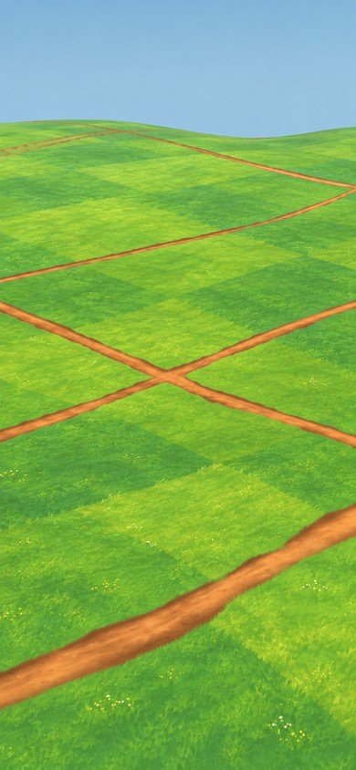
Two thirds ripe wheat blocks with crop rows, one third green, on the same field grid.
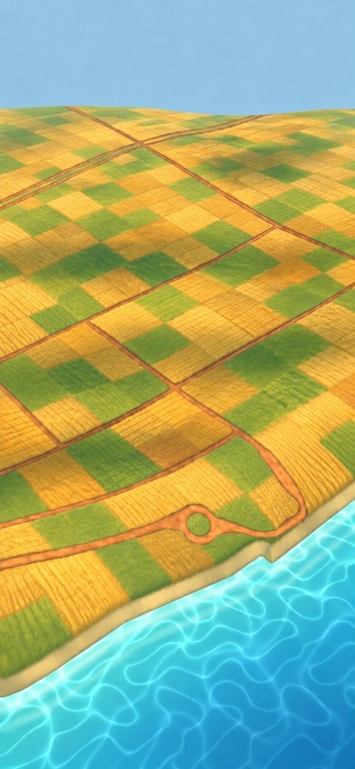
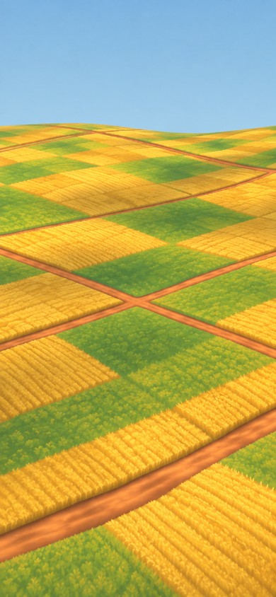
Large dense groves, each one tree kind, over glades of deep cool green with a forest-floor tint.
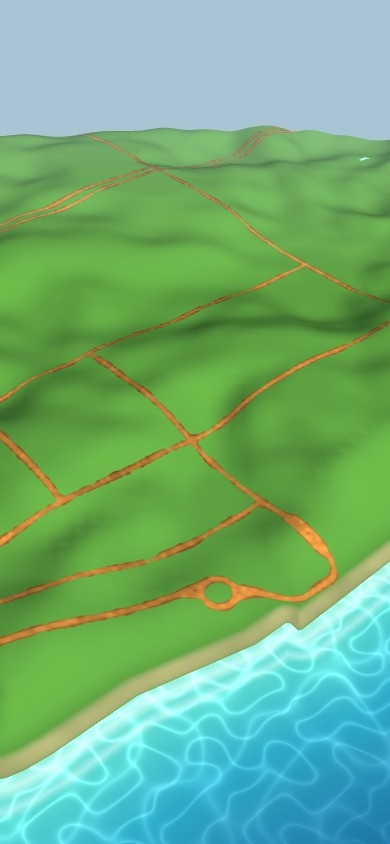
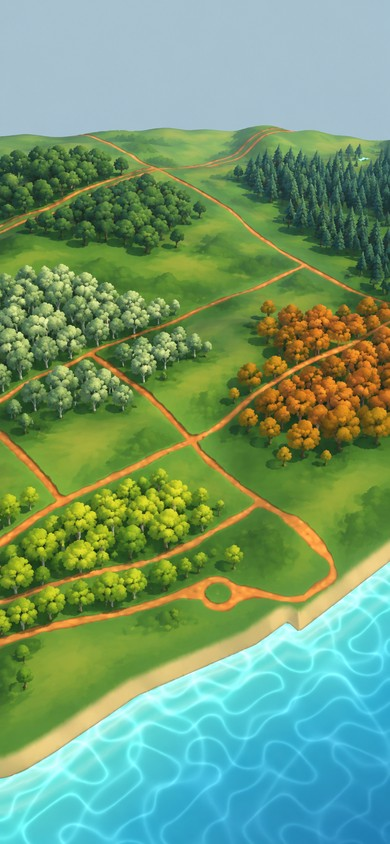
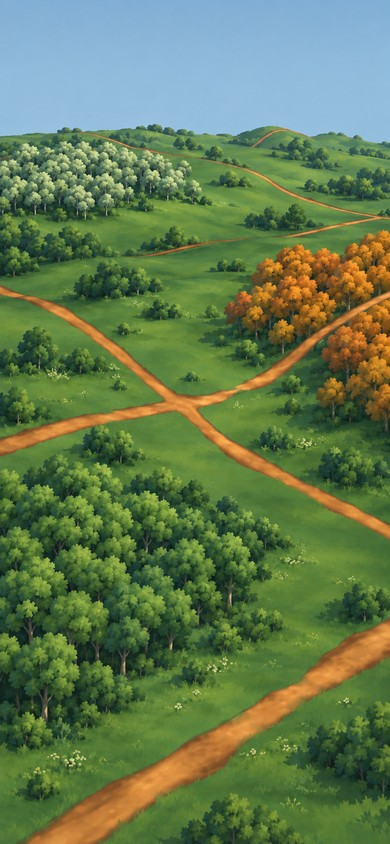
Nearly level dark olive and peat-brown ground with shallow mud-floored indents ringed by reeds; never water.
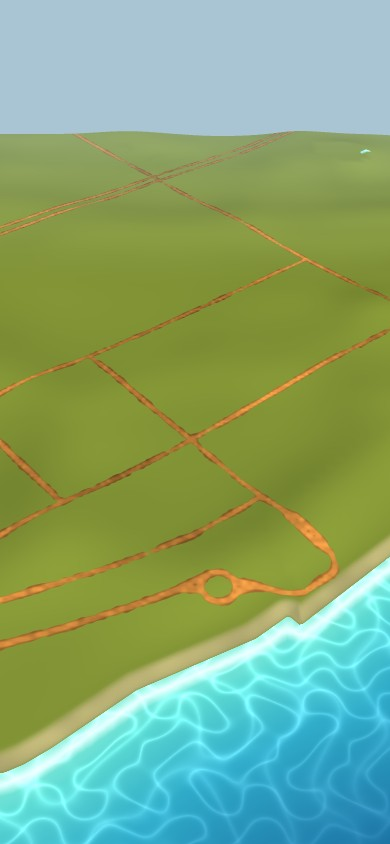
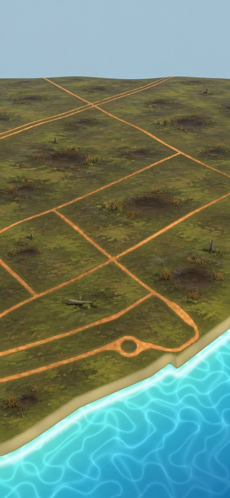
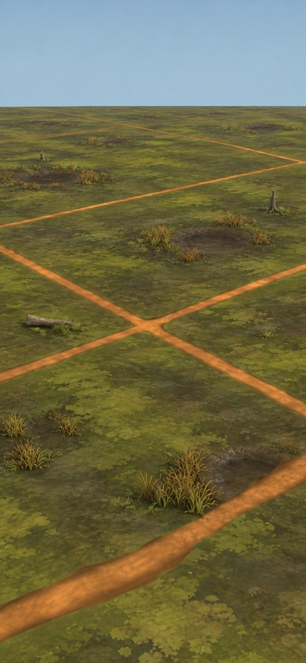
The approved warm tan rock with pale tops, repainted smooth for a like-for-like board.
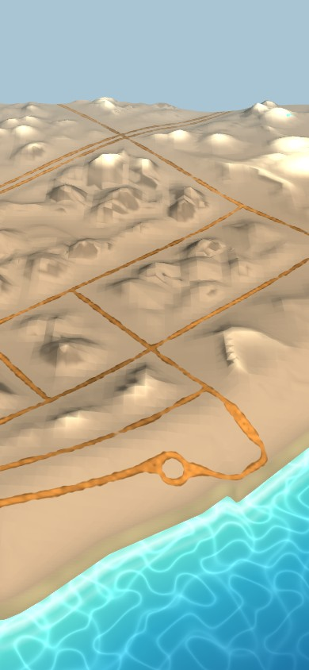
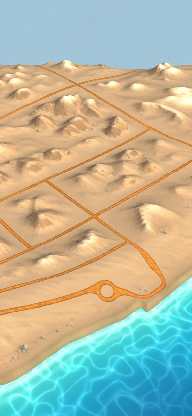
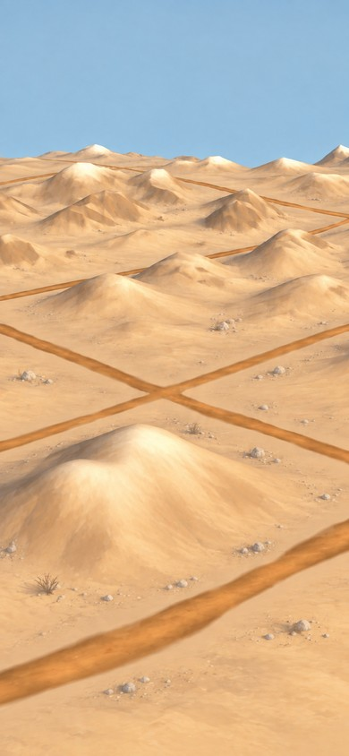
White drifts with pale-blue shadow sides, wind ripples and exposed rock, repainted smooth.
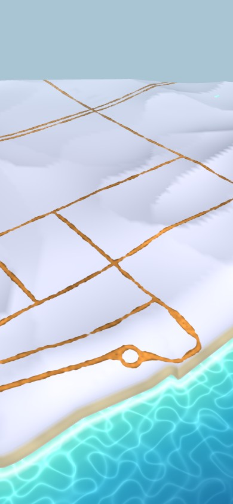
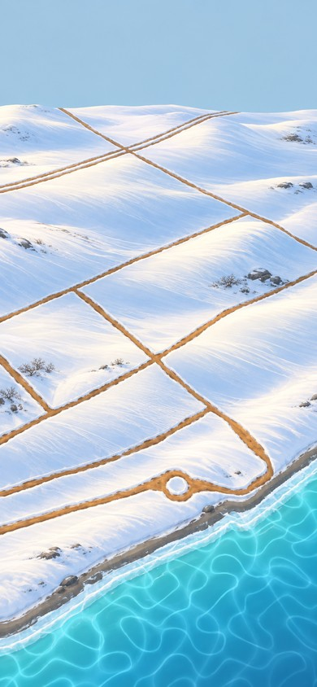
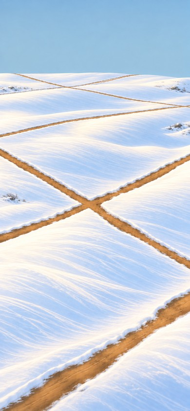